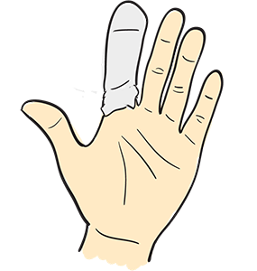
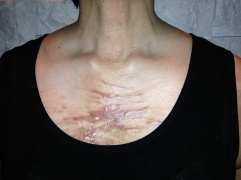
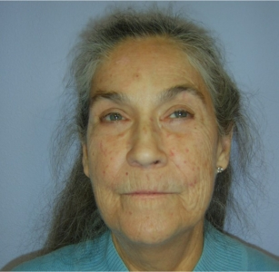

Module: Management of Raynaud’s Phenomenon, Finger Ulcers, Calcinosis, and Skin Involvement
Deborah McCloskey, RN, BSN; Janet L. Poole, PhD, OTR/L Cindy Mendelson, PhD, RN, and; Dinesh Khanna, MD, MS
Calcinosis

Calcinosis (calcium deposition under the skin) is common in patients with scleroderma, especially in people with limited disease and with overlap syndrome. Calcinosis can cause hand disability but is rarely associated with contractures. Management is conservative and treatments are not effective. In rare cases, calcium deposits can cause infections of the finger, especially when the calcium extrudes out of the skin. A hand surgeon can do excision of the calcium, but usually these reoccur.
Skin Care
The most obvious sign of scleroderma is hardening of the skin. Tight skin may be painful, itchy, and debilitating. Often there is increased sensitivity with some of the skin changes that may occur. Skin can break down more easily if there is excessive dryness. Here are some tips on how to care for your skin:
- Avoid direct skin contact with harsh detergents. Use rubber or other household gloves for cleaning and washing dishes, etc.
- Many moisturizers may relieve dryness and itching. Moisturizers rich in lanolin are absorbed well. You may have to try several types to find one that works for you.
- Antihistamines may be helpful to relieve itching, which may be caused by underlying inflammation. Management of underlying skin fibrosis may also be beneficial.
- Massage has also been useful in easing the tension on the skin and providing relaxation and improved mobility.
- Room humidifiers in the dry months help keep the skin moist.
- Limit shower time, as long showers may contribute to skin dryness. Use moisturizing soaps and oatmeal-based products. Towel-dry your skin thoroughly. Apply moisturizer immediately after the shower for the best absorption.
- Cotton gloves worn overnight with a heavy moisturizer will help the skin absorb the moisturizer and help prevent fissures (cracks).
- Cover skin cracks, ulcers, or calcium deposit areas with a cloth (not plastic) bandage, and use an antiseptic to protect against infection. Change the bandage whenever it gets wet.
- Some medications, such as methotrexate and mycophenolate (Cellcept®), have been found to soften the skin in early diffuse scleroderma.
Hyperpigmentation
Hyperpigmentation of the skin can occur due to abnormal over- and underproduction of skin pigmentation. The skin can develop a salt-and-pepper appearance, especially in people with dark skin. There is no treatment for this except camouflaging with cosmetics. Sometimes hyperpigmentation gets better over time.
Please refer to the hyperpigmentation section in the “Presentation of Scleroderma in African Americans” lesson.
Telangiectasias
Telangiectasias are visible as small red or purple spots on the fingers, palms, face, and lips. They can be covered with special cosmetics, such as Dermablend™, which is waterproof and not perfumed.
New therapies, such as laser treatment by a cosmetic dermatologist, may be effective but require regular treatment. Talk to your dermatologist to see if you are an appropriate candidate for this.
It must be emphasized that these suggestions are not intended to reduce the extent of scleroderma skin involvement, but rather to provide comfort and support of the symptoms of skin involvement.